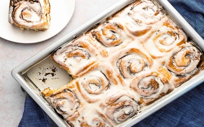

Cinnamon Rolls Recipe

Dough Ingredients
- 1 cup warm milk
- 1 package active dry yeast (10g)
- 1/2 cup sugar
- 1/3 cup melted butter
- 1 tsp salt
- 2 eggs
- 4 cups all-purpose flour
Filling Ingredients
- 1 cup brown sugar
- 2 1/2 tbsp ground cinnamon
- 1/3 cup melted butter
Frosting Ingredients
- 1/2 cup softened butter
- 1 1/2 cups powdered sugar
- 1/2 cup cream cheese
- 1/2 tsp vanilla extract
- 1/8 tsp salt
Preparation Steps
Dough Preparation
- In a small bowl, dissolve yeast in warm milk and let it sit for 5 minutes.
- In a large bowl, mix sugar, melted butter, salt, and eggs.
- Add the dissolved yeast mixture to the sugar and egg mix.
- Gradually mix in flour until a soft dough forms.
- Transfer dough onto a floured surface and knead for 5-10 minutes.
- Place dough in a greased bowl, cover, and let it rise in a warm place for 1 hour or until doubled in size.
Assembly
- After dough has risen, roll it out into a 16x10 inch rectangle.
- Spread melted butter over the dough.
- Mix brown sugar and cinnamon, then sprinkle evenly over the buttered dough.
- Roll up the dough tightly, starting from the long side.
- Cut rolled dough into 12 slices and place them in a greased baking pan.
Baking
- Cover rolls with a clean cloth and let them rise for an additional 30 minutes.
- Preheat oven to 350°F (180°C).
- Bake rolls for 20-25 minutes or until golden brown.
Frosting Preparation
- While rolls are baking, beat together softened butter, cream cheese, powdered sugar, vanilla extract, and salt until creamy.
- Spread frosting over warm cinnamon rolls.
Tips
- For added flavor, sprinkle chopped nuts or raisins over the cinnamon-sugar mixture before rolling.
- Serve cinnamon rolls warm to enjoy their soft texture and delicious aroma.